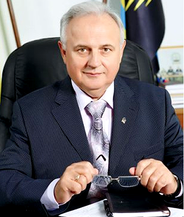

не знайшов порушень у 35 справах, на яких розпиляли грн 1 000 340
покарання добилися посадки на 5 років
Фігурує у справах
-
Не відреагував на вказаний факт у справі "Перші 712 млн кредиту на Дністровську ГАЕС «Ощадбанк» дав без конкурсу, бо підрядникам вже боргують 168 млн"
-
Переадресував перевірку Мінекономрозвитку у справі "Правоохоронні та контролюючі органи відмовлються перевіряти мільярдний тендер для офісу Вищих судів."
-
Не відреагував на вказаний факт у справі "Залізничники вдвадорога купили окуляри та інші захисні вироби"
-
Зупинили розпил 5 млн. грн. депутатом від ПР
-
Надіслав не вмотивовану відповідь про результати перевірки у справі "У ДУСі є санепідстанція для обслуговування Януковича, яка розпиляла 2 мільйони на ремонт лабораторій"
-
Не відреагував на вказані факти у справі "Антимонопольний запитав у замовника про пов’язаність осіб начальника та його дружини"
-
Послався на відсутність у зверненні фактів порушень у справі "Апаратники Клюєва слідом за шторами та автомобілями купили меблі за мільйон по секретним цінам"
-
Не відреагував на вказані факти у справі "Москаленки не відчепилися від усипальниці Раєвських і розіграли тендер наново. По дорозі ще й подорожчало"
-
Перевірить під час планових контрольних заходів у справі "Служба автомобільних доріг у Харківській області не пускає посадових осіб Держфінінспекції.
-
Перевірить під час планових контрольних заходів у справі "Служба автомобільних доріг у Харківській області не пускає посадових осіб Держфінінспекції."